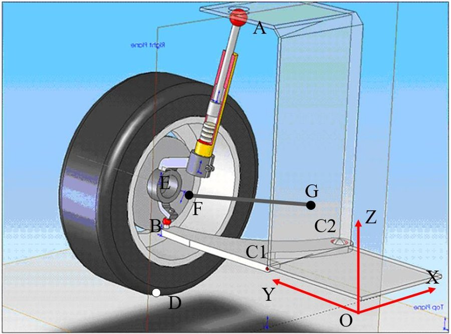
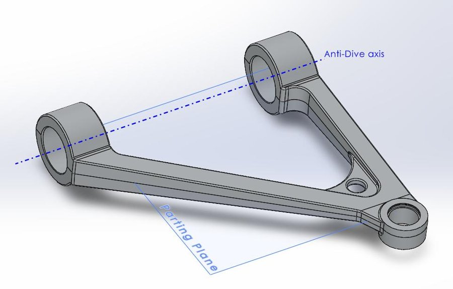

McPherson Suspension Design
 Design of a front McPherson suspension for a front-wheel-drive vehicle, developed for the "Road and Off-Road Vehicle Design" course at Politecnico di Milano. Starting from target camber and steering angle curves as a function of wheel travel, the suspension's kinematic hardpoints were optimized with an Artificial Neural Network trained on kinematic simulations, coupled to a constrained non-linear optimization (SQP) in MATLAB that minimized the error between the ANN-predicted camber/steer curves and the targets, within the allowable packaging space for each joint.
Design of a front McPherson suspension for a front-wheel-drive vehicle, developed for the "Road and Off-Road Vehicle Design" course at Politecnico di Milano. Starting from target camber and steering angle curves as a function of wheel travel, the suspension's kinematic hardpoints were optimized with an Artificial Neural Network trained on kinematic simulations, coupled to a constrained non-linear optimization (SQP) in MATLAB that minimized the error between the ANN-predicted camber/steer curves and the targets, within the allowable packaging space for each joint.
Lower Arm Design & Structural Verification
 
- Kinematic Optimization: ANN-based surrogate model of suspension kinematics + SQP optimization in MATLAB to hit camber/steer targets at full compression, nominal and full extension.
- Structural Sizing: Worst-case load computation (k=2.5 dynamic factor) and equilibrium-based sizing of the lower arm's critical cross-section.
- Manufacturing-Driven Design: Topological optimization followed by a die-casting-compatible redesign, reaching a final weight of 3.51 kg.
- FEA Validation: Finite element verification of the final lower arm design, confirming a safety factor of 1.37 against yielding.
Tools and Technologies
- Kinematics & Optimization: MATLAB (ANN surrogate modeling, SQP optimization)
- CAD, Topology Optimization & FEA: SolidWorks
- Key Concepts: Suspension kinematics, die-casting design constraints, structural sizing and FEA validation